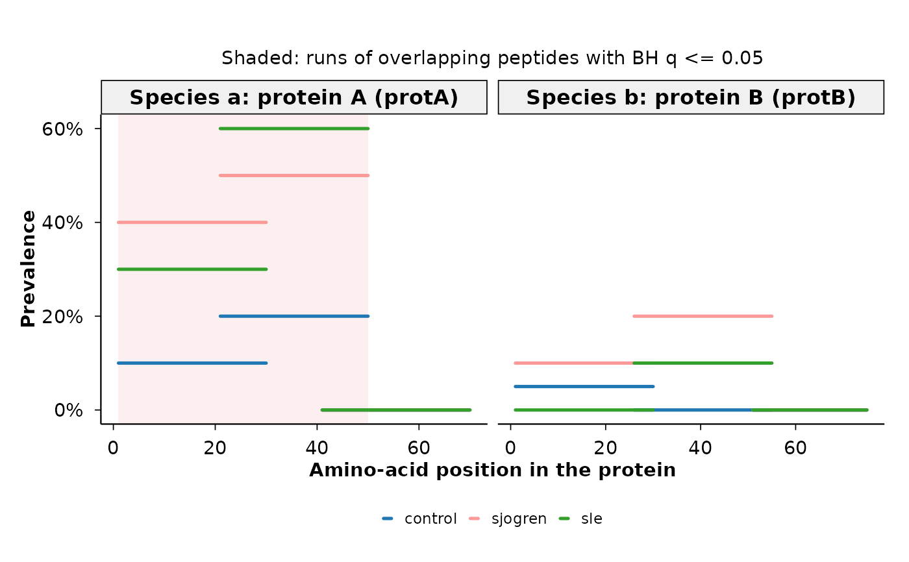
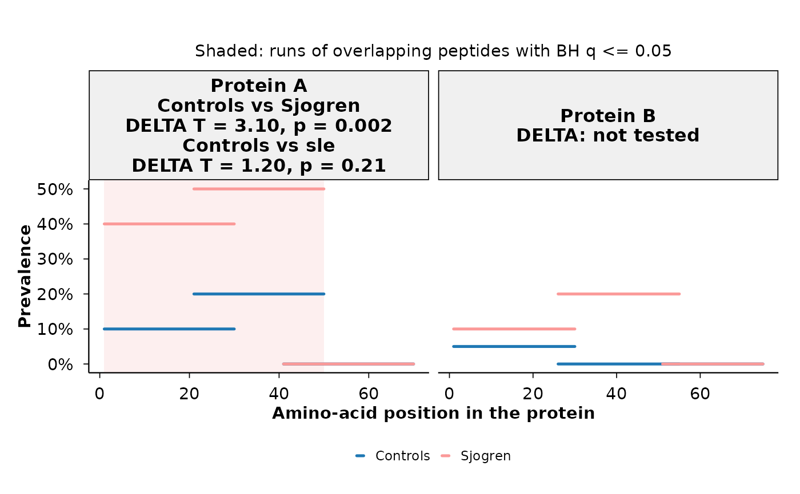

Plot every library peptide of the selected proteins at its
position in the protein (x-axis) and at its prevalence in each group
(y-axis), one panel per protein. The plot shows where along a protein the
reactivity sits and how it differs between groups. The proteins are the
ones passed in proteins; a shaded band marks the longest run of
overlapping significant peptides, and DELTA statistics from
compute_delta() can be added to the panel titles.
Usage
profile_plot(
prev_tbl,
proteins,
groups = NULL,
peplib = NULL,
show_overlap = TRUE,
alpha = 0.05,
delta_tbl = NULL,
custom_colors = NULL,
ncol = NULL,
line_width_pt = 0.9,
plot_title = NULL,
plot_subtitle = NULL,
x_label = NULL,
y_label = NULL
)Arguments
- prev_tbl
Data frame from
compute_pop()(or equivalent) with columnsfeature,group1,group2,prop1,prop2and, forshow_overlap,p_raw. If it has arankcolumn, only the"peptide_id"rows are used; agroup_colcolumn, if present, separates group pairs.- proteins
Character vector of
protein_seq_idvalues, one panel each, in this order. Names, if given, are used as panel titles; otherwise the title is the protein's annotation and ID.- groups
Optional character vector of the groups to draw, in legend order. Names, if given, are used as legend labels. Defaults to all groups in
prev_tbl, pair by pair in the order of its rows.- peplib
Optional peptide library with columns
peptide_id,protein_seq_id,pos,aa_seq,len_seqandtaxon_with_protein_unique_annotation. IfNULL, the phiperio peptide libraries the peptide IDs belong to are detected from their prefixes and fetched withget_peptide_library().- show_overlap
Logical; shade the longest run of overlapping hit peptides per protein, group pair and direction (see Details). Default
TRUE.- alpha
Numeric in (0, 1]; BH-adjusted p-value threshold for hit peptides. Default 0.05.
- delta_tbl
Optional data frame from
compute_delta()run withrank_cols = "protein_seq_id", with columnsfeature,group1,group2,T_obsandp_perm.- custom_colors
Optional vector of group colors, named by group or recycled in
groupsorder. Defaults tophip_palette.- ncol
Number of panel columns, passed to
ggplot2::facet_wrap().- line_width_pt
Line width of the peptide segments. Default 0.9.
- plot_title, plot_subtitle
Optional plot labels.
- x_label, y_label
Optional axis labels.
Details
Each peptide is a horizontal segment from its first to its last amino acid
(pos + 1 to pos + nchar(aa_seq), clipped at the protein length
len_seq), drawn at its prevalence in each group. All library peptides
of a protein are drawn: peptides missing from prev_tbl are drawn at
0\
Peptides without a position in the library are left out.
Group prevalences are read from both sides of the group pairs in
prev_tbl, so a table with several pairs, e.g. from
compute_pop(group_cols = c("control_vs_sjogren", "control_vs_sle")),
gives one line per group. A group that appears in several pairs must have
the same prevalences in all of them.
With show_overlap = TRUE, hit peptides are those with a BH-adjusted
p_raw of at most alpha, the correction running over all
peptides of a group pair in prev_tbl. For each protein, group pair
and direction (the group with the higher prevalence), the hit peptides form
runs: a run grows with every next hit peptide that overlaps the region it
covers so far. The longest run is shaded in the colour of the group with the
higher prevalence when it has at least two peptides. Bands are drawn only
for pairs whose two groups are both drawn.
With delta_tbl, each panel title lists every group pair tested for
the protein, with the DELTA statistic T_obs and the permutation
p-value p_perm; proteins without a row are marked "not tested".
Examples
peplib <- data.frame(
peptide_id = paste0("pep", 1:6),
protein_seq_id = rep(c("protA", "protB"), each = 3),
pos = c(0, 20, 40, 0, 25, 50),
aa_seq = strrep("A", 30),
len_seq = rep(c(70, 75), each = 3),
taxon_with_protein_unique_annotation =
rep(c("Species a: protein A", "Species b: protein B"), each = 3)
)
prev_tbl <- data.frame(
rank = "peptide_id",
feature = rep(c("pep1", "pep2", "pep4", "pep5"), 2),
group1 = "control",
group2 = rep(c("sjogren", "sle"), each = 4),
prop1 = rep(c(0.10, 0.20, 0.05, 0.00), 2),
prop2 = c(0.40, 0.50, 0.10, 0.20, 0.30, 0.60, 0.00, 0.10),
p_raw = c(0.001, 0.002, 0.5, 0.5, 0.5, 0.001, 0.5, 0.5)
)
# pep1 and pep2 overlap and are both more common in sjogren: one band
profile_plot(prev_tbl, proteins = c("protA", "protB"), peplib = peplib)

# two groups with display labels, DELTA statistics in the panel titles
delta_tbl <- data.frame(
rank = "protein_seq_id",
feature = "protA",
group1 = "control",
group2 = c("sjogren", "sle"),
T_obs = c(3.1, 1.2),
p_perm = c(0.002, 0.21)
)
profile_plot(
prev_tbl,
proteins = c("Protein A" = "protA", "Protein B" = "protB"),
groups = c(Controls = "control", "Sjogren" = "sjogren"),
peplib = peplib,
delta_tbl = delta_tbl
)
